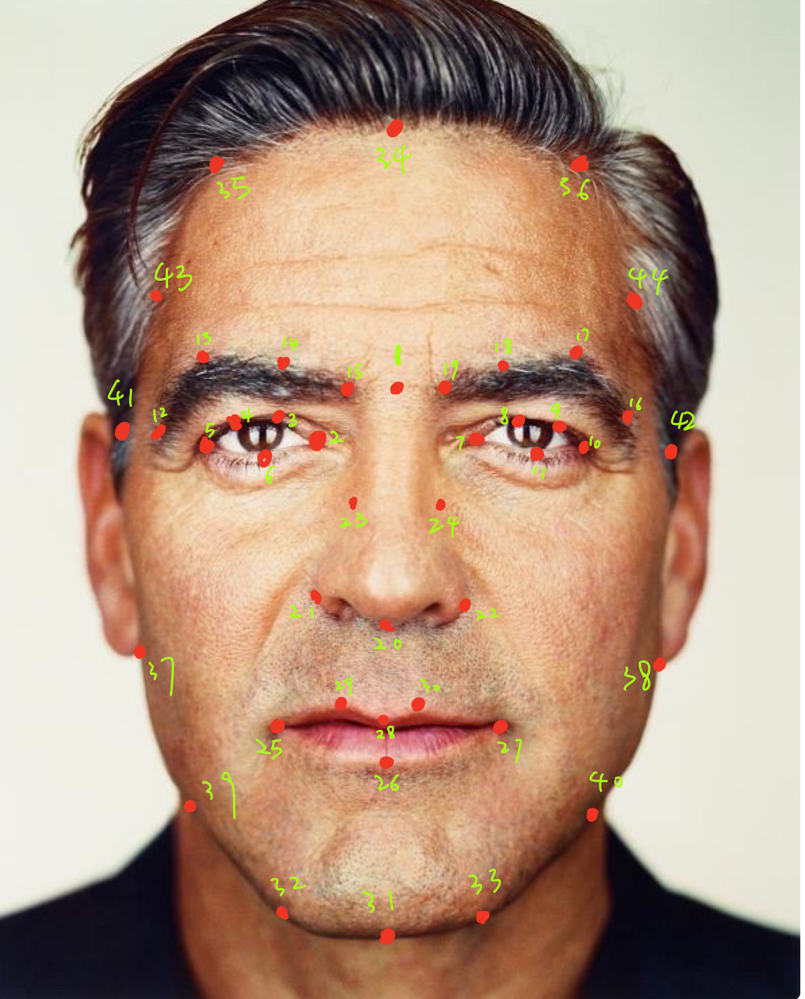
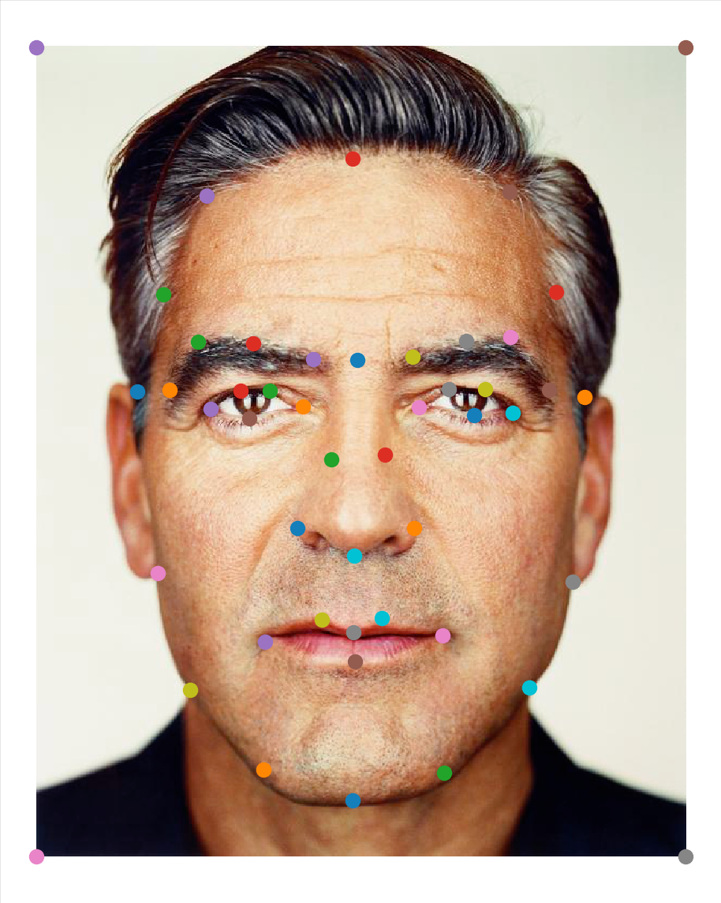
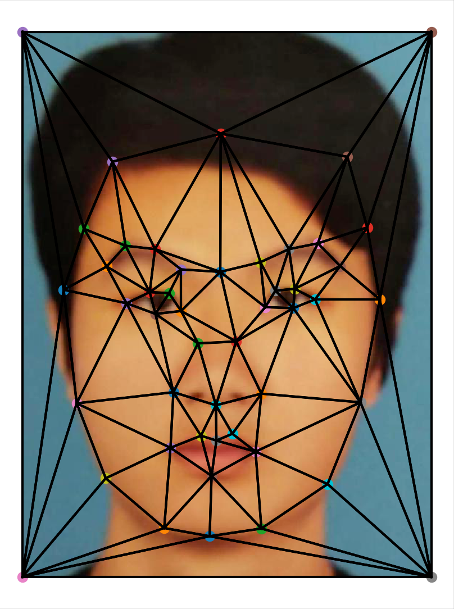
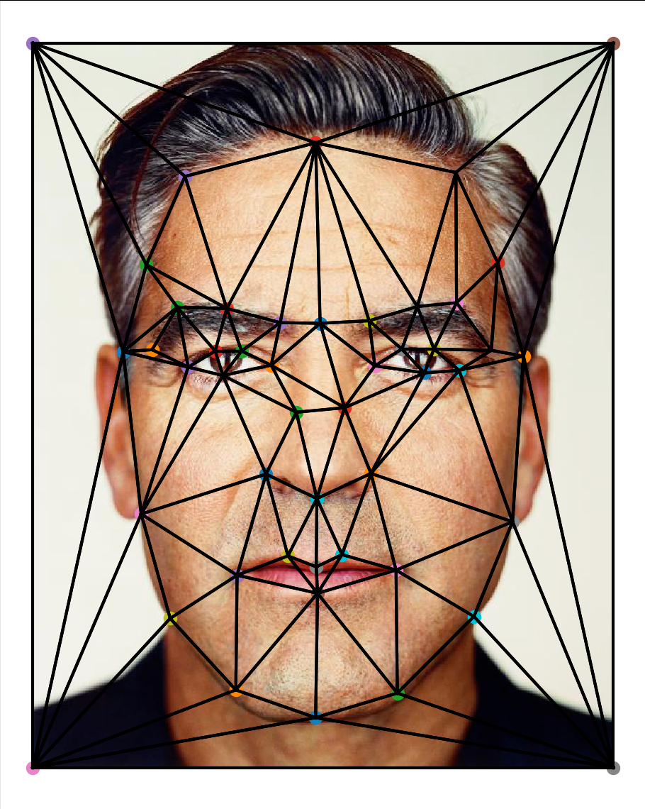
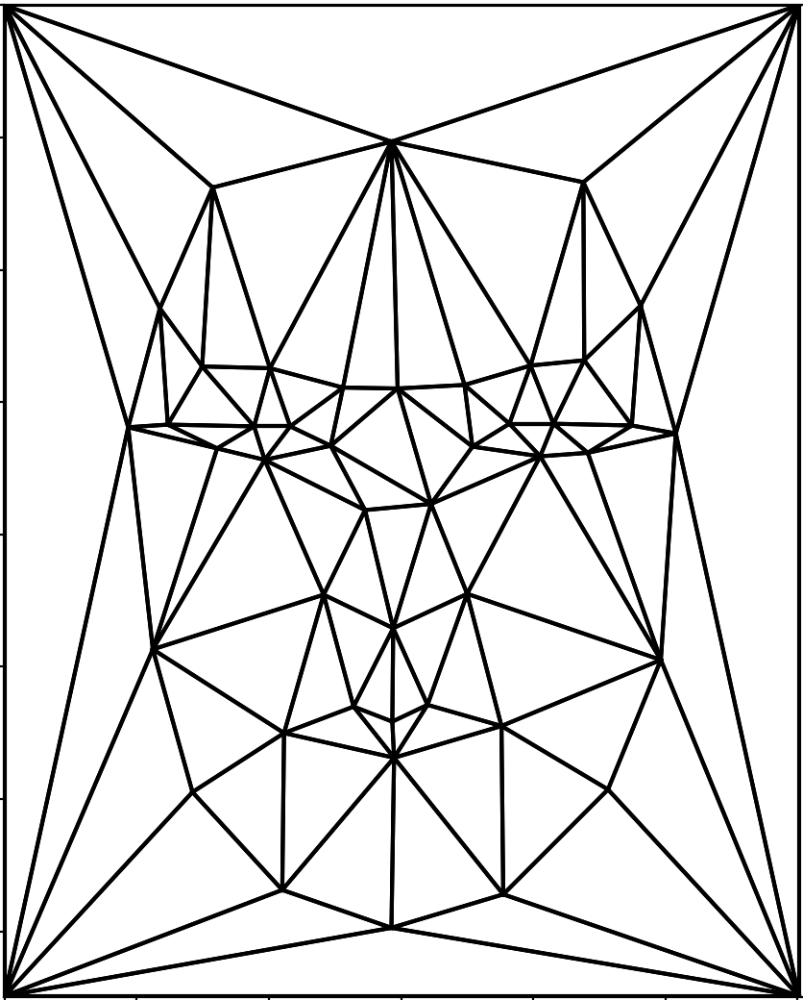
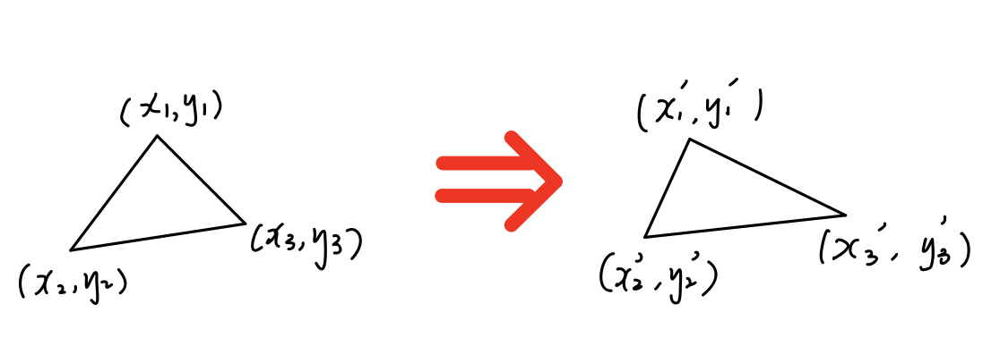
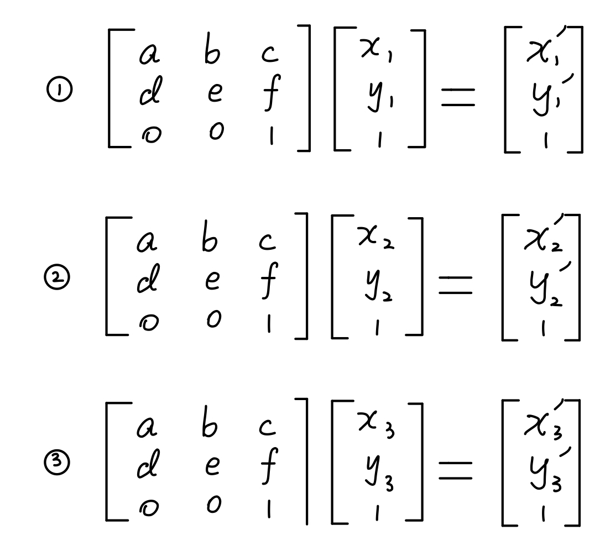
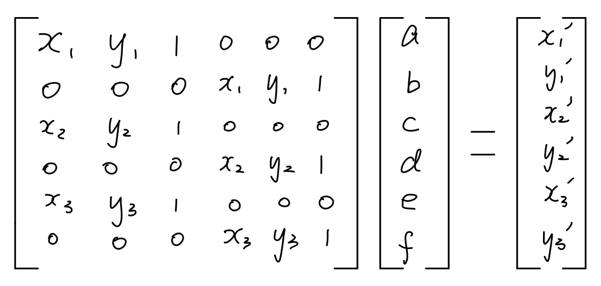
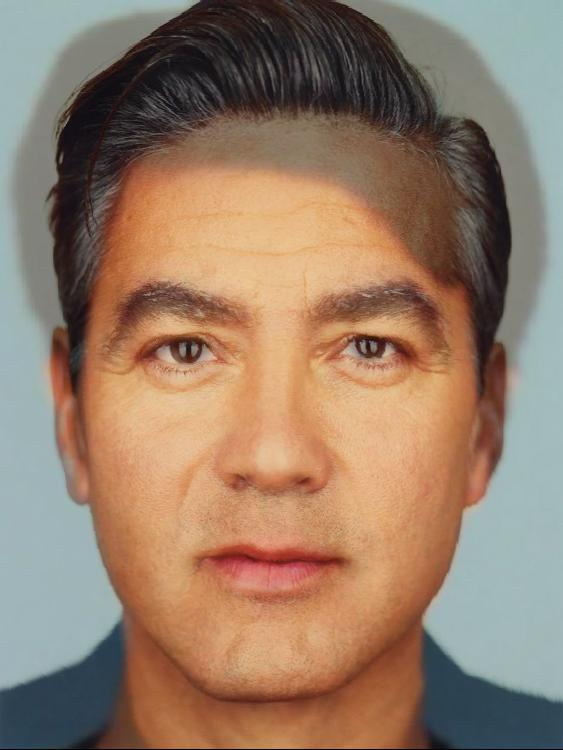
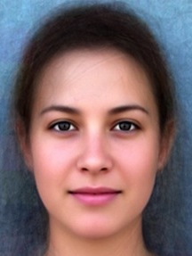

In this assignment I produce a "morph" animation of one face into another face, mean face
of a particular population, and manipulate my face's vector base on the theory that faces
forms basis and transform of features can be represented as vector between faces.
To accomplish this, I first label the correspondence, mapping eyes to eyes, mouth to mouth,
chin to chin, ears to ears, etc., to get the smoothest transformations possible.
Then with the correspondences positions, I use Delaunay Triangulation algorithm to determine
triangular partitions of the images. With the positions of corners of triangles, I treat the transformations
of triangle areas as trasformations of basis. The transformation matrices can be solved with linear equations.
Then I map the pixel values, with specific weights, together onto the resulting image. This operation
can produce a pretty decent mid-way face result.
Part 1: Defining Correspondences
Section 1.1: Label & Record Correspondences
With the help of ginput in pyplot, I manage to first get the positions of
correspondences. The order of the correspondences is shown in the example image below.
Labeling Order

Produced Points

Part 2: Computing the "Mid-way Face"
First I compute the "mid-way" shape, the position of the correspondences, by simply adding the
correspondences of image A and image B. MidShape = weight * ShapeA + (1 - weight) * ShapeB, where
weight is a uniform slicing from 0 to 1.
Then I compute the trigular partition of "mid-way" shape with Delaunay Triangulation.
Image 1 Partition

Image 2 Partition

MeanShape Partition Example

To get the transform rule of the image partitions, I use equation of Affine transformation,
since triangle transformations obey affine transformation.
Consider the example below
Tri1 -> Tri2

With the rule of Affine transformation, we know that the coordinates of the corresponding points
in the two triangles obey the following equations.
Affine Transform

To solve this system of equations, I construct the following matrix linear equation, and with np.linalg.lstsq,
I solve for the unknowns in the transform matrix, a-f.
Linear Equation

With these information about the transformation, I can simply multiply a pixel's position with the
transformation matrix gives us the destination position of that pixel on the final image.
Here is the face of me and George Clooney, as well as our mid-face.
Zixian Zang
Mid Face

George Clooney
Part 3: The Morph Sequence
I write a function that produces a warp between im1 and im2 using point correspondences
defined in im1_pts and im2_pts (which are both n-by-2 matrices of (x,y) locations) and
the triangulation structure tri . The parameters warp_frac and dissolve_frac control shape
warping and cross-dissolve, respectively. In particular, images im1 and im2 are first warped
into an intermediate shape configuration controlled by warp_frac, and then cross-dissolved
according to dissolve_frac. For interpolation, both parameters lie in the range [0,1]. They
are the only parameters that will vary from frame to frame in the animation.
Example 1
Example 2
Part 4: The "Mean face" of a Population
I use images of all current faculty member of BAIR (The Berkeley Artificial Intelligence Research Lab).
Faculty list link:https://bair.berkeley.edu/faculty.html
Dataset
"Mean Face" of BAIR Faculties
Morph BAIR Faces Into Meanshape
Morph My Face and BAIR Mean Face
morph me into bair
morph bair into me
Part 5: Caricatures: Extrapolating From The Mean
The normal range of alpha is between 0 and 1, and with alpha value 0.5, the produced image is
the mean face of the two faces. In this part, I explore the effect when alpha is within abnormal
range.
oringin
alpha = 0.5
alpha = -0.5
Part 6: Bells and Whistles I
Change "Gender" of Face
I use the average face of male & female, create the difference of female face and male face.
Since we believe that faces form high dimensional spaces, the difference of male and female face
can be essentially understood and used as difference between a face's male and female "versions".
Average Male
Average Female

By just applying the shape difference to my face or just applying the color differnce, I create
my face with female shape and color. I also create the face with both
shape and color difference applied.
When computing difference of color, I morph the male face into female shape before compute the
difference of pixel value, to make sure that shape difference does not interfere with color difference.
It is visible that after applying the color difference, my face seems whiter, and with shape difference
my face becomes skinnier
Oringinal Face
Only Color Changed
Only Shape Changed
Both Color & Shape Changed
Part 7: Bells and Whistles II
Morphing Music Video On A Theme
I create a morphing video of the faces of my favorite soccer club's starting 11 players.
Part 7: Bells and Whistles III
Morphing Music Video of Students in the Class
My face (Number 0) to next Yihui's face (Number 1)